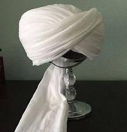

Imama
Imama is a Sudanese traditional turban. With a soft texture wrapping around the head like a crown making it an iconic attire, place n top of the tagiyah, sedari and of course the main piece the jalabiyah. It roots back to the dwan of the Islamic times where the Prophet Muhammad (peace be upon him) was describe to wearing a turban sometime as a scarf or wrapped on his head with its multiple designed tail hanging on the back or in front between the shoulder. In the famous Islamic Battel of Bader, Zubayr was honored a golden imama by the angels elevating the status of this garment. The Imama was introduce in Sudan through multiple waves of migration of the Arabs to and through Sudan at the times of the Kingdom of Makuria in the early 652 CE. The Imama was an essential piece during war, as it is around 6ft tall it is used to cover up the fallen Muslim soldiers during battels. Approaching the 9th century, influenced by the Ottoman empire, the Imama was fully address as a formal piece. Made of this breathable cotton/wool blend, with the white colors giving it that sense of pureness, protecting from the sun rays of the desert, wrapped around the head 15-20 cycles, it represent modesty, culture, resilience and acceptance of the only promised to be fulfilled, Death.